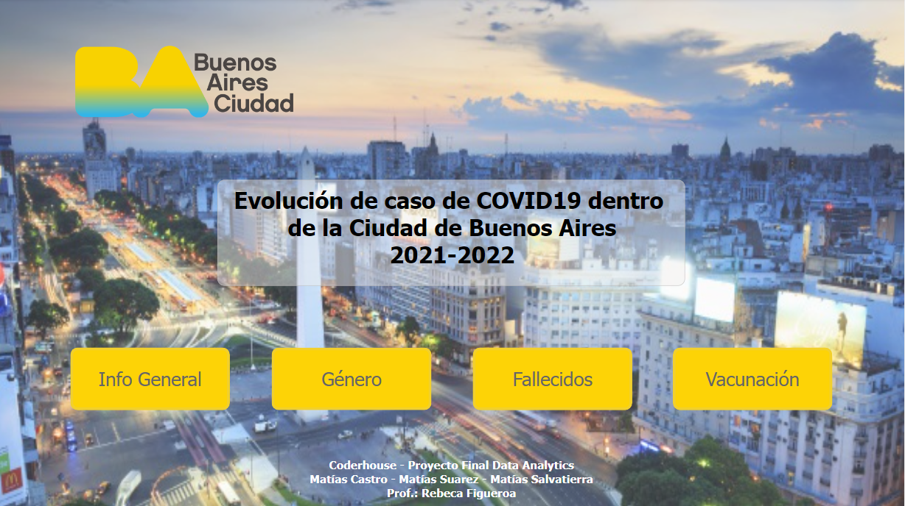
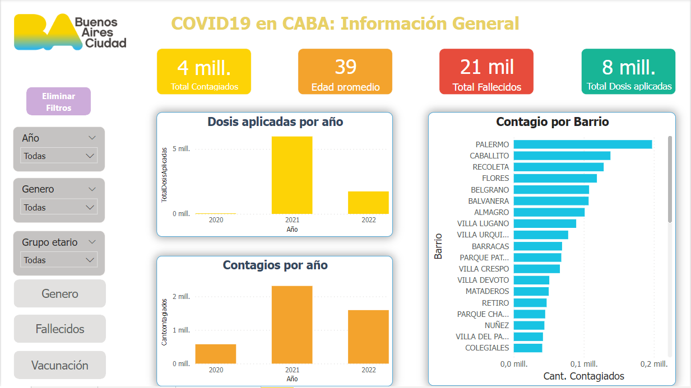
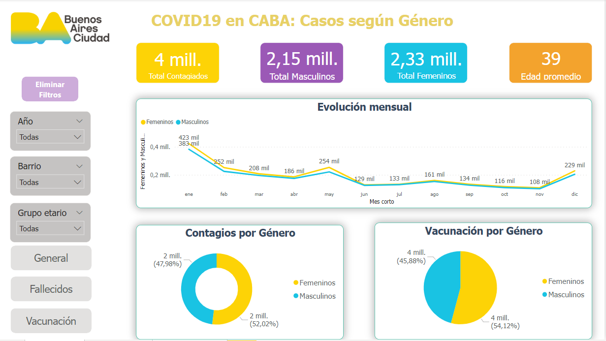

Matías Salvatierra
Proyecto Coderhouse
Para el curso de Data Analytics de Coderhouse junto con 2 compañeros más decidimos analizar la evolución de casos por Covid19 en conjunto con la aplicación de vacunas dentro de la Ciudad de Buenos Aires desde el inicio de la pandemia hasta junio del 2022.
Más información del desarrollo del proyecto AQUI
- 
- 
- 
-

-

UnitedWay Argentina - Ingresos AVN y Matching
Mini informe sobre los ingresos recibidos en 2022 (hasta julio) de Aporte Voluntario por Nómina y Matching de la empresas socias.